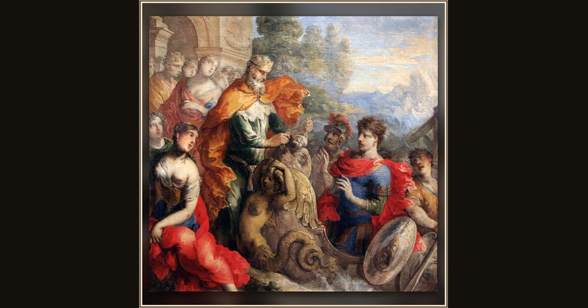

Aeolus Giving the Winds to Odysseus
Isaac Moillon · 17th century · Musée de Tessé · Le Mans, France
The wind-king Aeolus, painted big and bold for a tapestry design, entrusts Odysseus with the leather bag that holds the storms. Explore its place in Book X of the Odyssey.